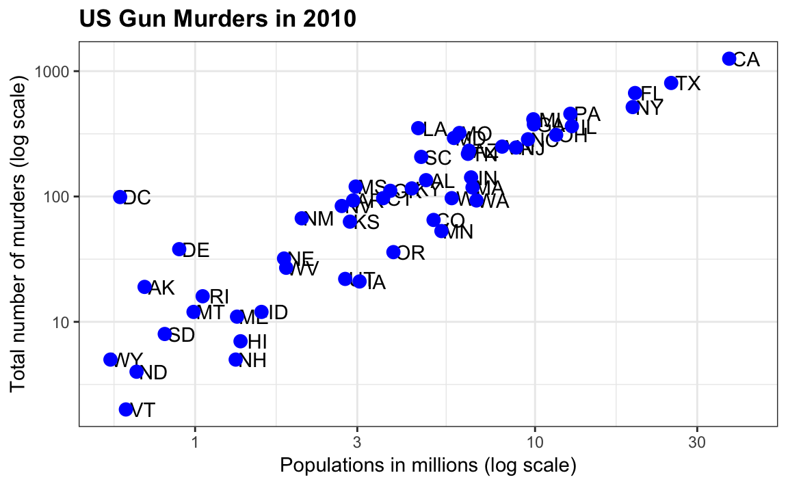
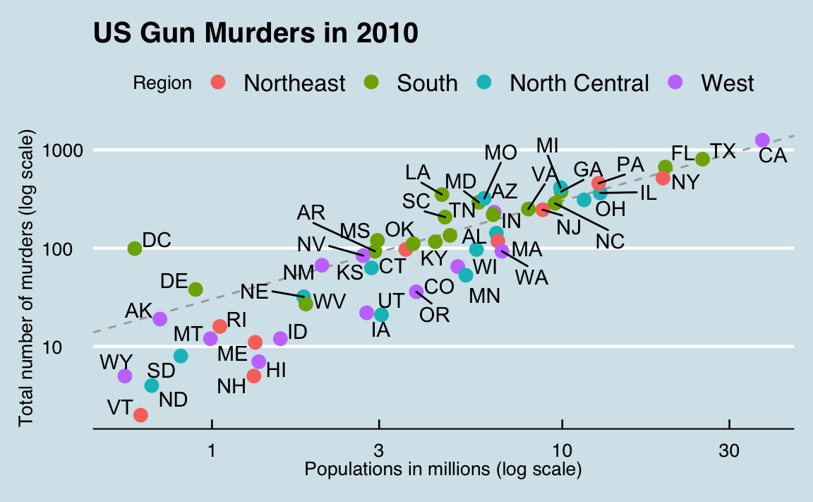
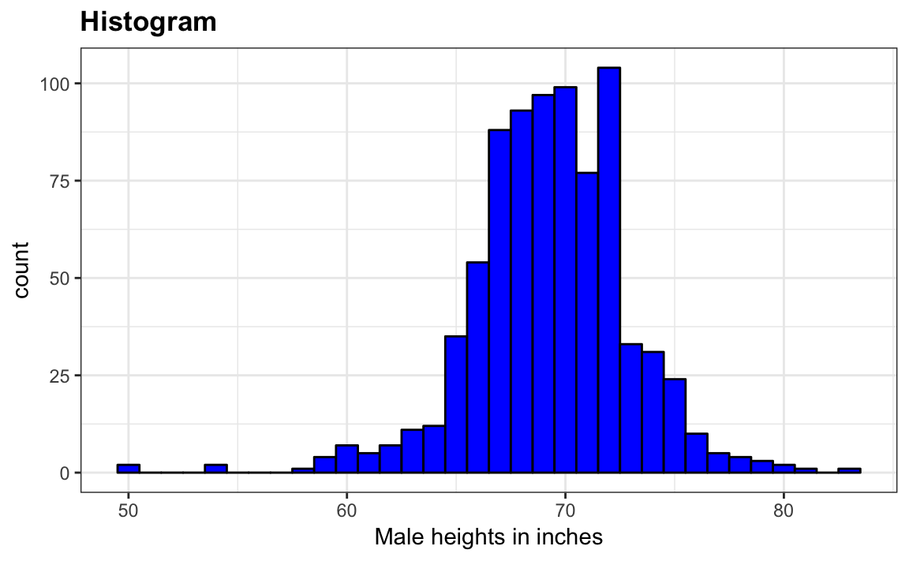
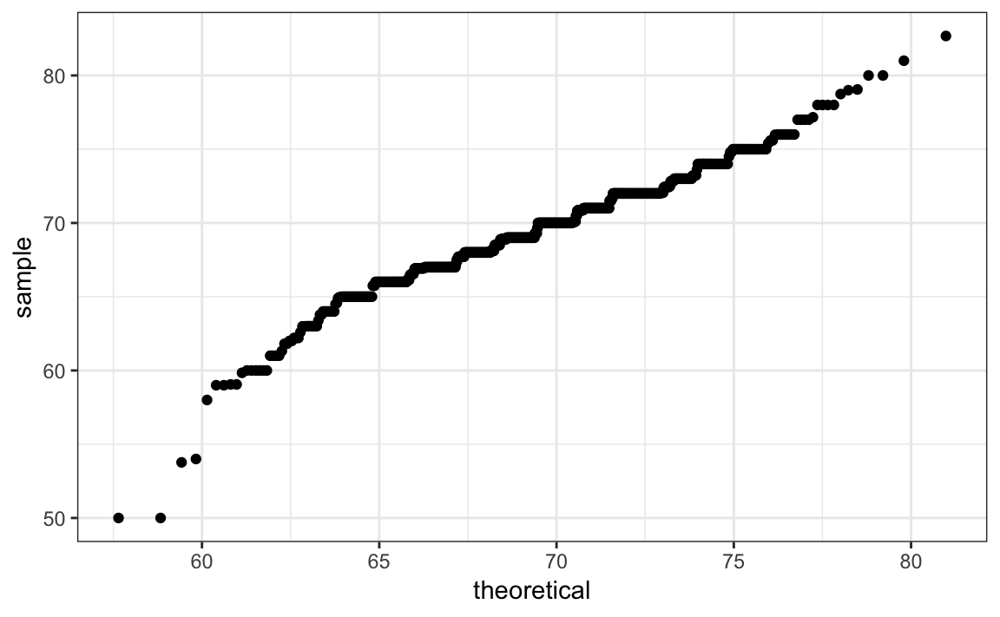
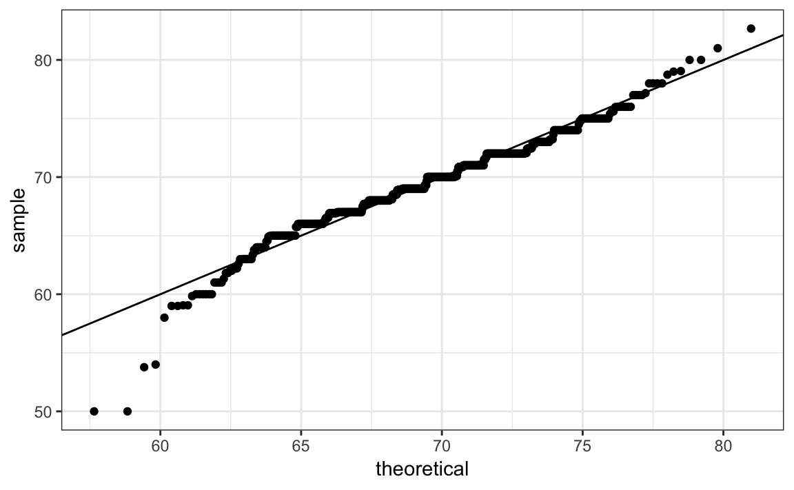
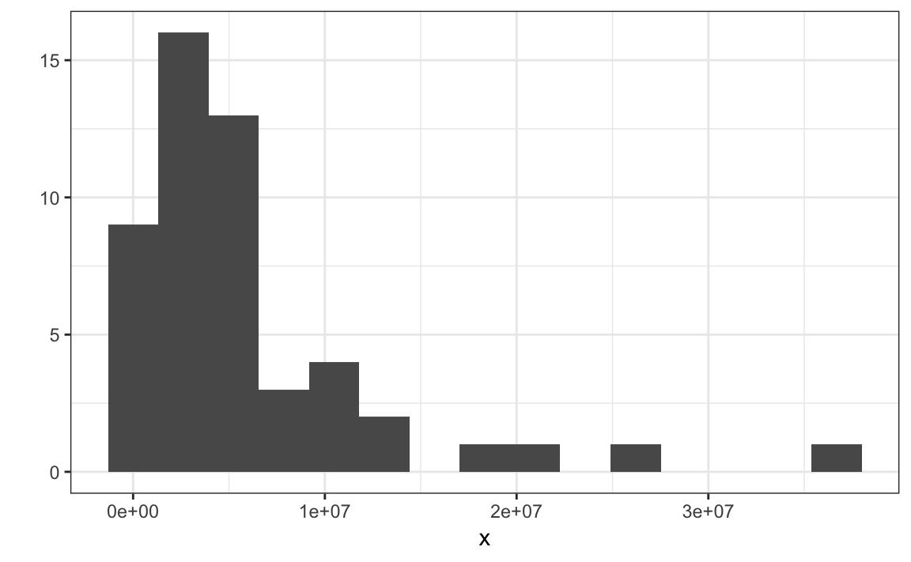
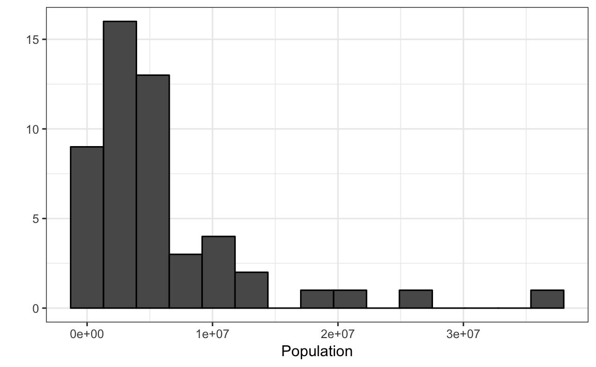
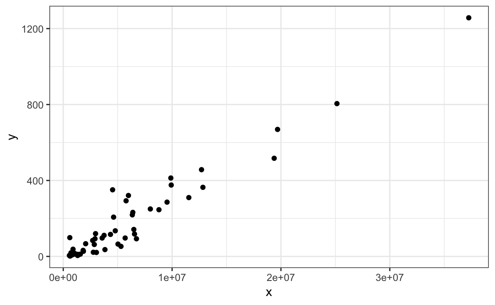
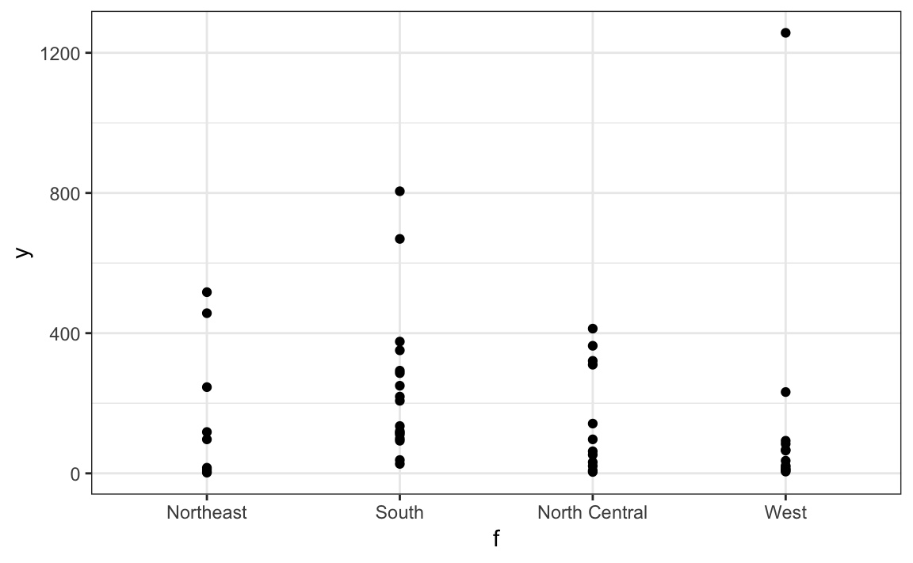

Chapter 21 ggplot2
We have now described several data visualization techniques and are ready to learn how to create them in R. Throughout the book, we will be using the ggplot2 package. We can load it, along with dplyr, as part of the tidyverse:
Many other approaches are available for creating plots in R. In fact, the plotting capabilities that come with a basic installation of R are already quite powerful. We have seen examples of these already with the functions plot, hist and boxplot. There are also other packages for creating graphics such as grid and lattice. We chose to use ggplot2 in this book because it breaks plots into components in a way that permits beginners to create relatively complex and aesthetically pleasing plots using syntax that is intuitive and comparatively easy to remember.
One reason ggplot2 is generally more intuitive for beginners is that it uses a grammar of graphics, the gg in ggplot2. This is analogous to the way learning grammar can help a beginner construct hundreds of different sentences by learning just a handful of verbs, nouns and adjectives without having to memorize each specific sentence. Similarly, by learning a handful of ggplot2 building blocks and its grammar, you will be able to create hundreds of different plots.
Another reason ggplot2 makes it easier for beginners is that its default behavior is carefully chosen to satisfy the great majority of cases and is visually pleasing. As a result, it is possible to create informative and elegant graphs with relatively simple and readable code.
One limitation is that ggplot2 is designed to work exclusively with data tables in which rows are observations and columns are variables. However, a substantial percentage of datasets that beginners work with are, or can be converted into, this format. An advantage of this approach is that, assuming that our data follows this format, it simplifies the code and learning the grammar.
21.1 The cheat sheet
To use ggplot2 you will have to learn several functions and arguments. These are hard to memorize so we highly recommend you have the a ggplot2 sheet cheat handy. You can get a copy here: https://www.rstudio.com/wp-content/uploads/2015/03/ggplot2-cheatsheet.pdf or simply perform an internet search for “ggplot2 cheat sheet”.
21.2 The components of a graph
We construct a graph that summarizes the US murders dataset:
Figure 21.1: Muder totals versus population size for US states.
We can clearly see how much states vary across population size and the total number of murders. Not surprisingly, we also see a clear relationship between murder totals and population size. A state falling on the dashed grey line has the same murder rate as the US average. The four geographic regions are denoted with color which depicts how most southern states have murder rates above the average.
This data visualization shows us pretty much all the information in the data table. The code needed to make this plot is relatively simple. We will learn to create the plot part by part.
The first step in learning ggplot2 is to be able to break a graph apart into components. Let’s break down the plot above and introduce some of the ggplot2 terminology. The main three components to note are:
- Data: The US murders data table is being summarized. We refer to this as the data component.
- Geometry: The plot above is a scatterplot. This is referred to as the geometry component. Other possible geometries are barplot, histograms, smooth densities, qqplots, and boxplots.
- Aesthetic mapping: The x-axis values are used to display population size, the y-axis values are used to display the total number of murders, text is used to identify the states, and colors are used to denote the four different regions. These are the aesthetic mappings component. How we define the mapping depends on what geometry we are using.
We also note that:
- The range of the x-axis and y-axis appears to be defined by the range of the data. They are both on log-scales. We refer to this as the scale component.
- There are labels, a title, a legend, and we use the style of The Economist magazine.
We will now construct the plot piece by piece. We start by loading the dataset:
library(dslabs)
data(murders)21.3 ggplot objects: a blank slate
The first step in creating a ggplot2 graph is to define a ggplot object. We do this with the function ggplot which initializes the graph. If we read the help file for this function, we see that the first argument is used to specify what data is associated with this object:
ggplot(data = murders)We can also pipe the data. So this line of code is equivalent to the one above:
murders %>% ggplot()
It renders a plot, in this case a blank slate, since no geometry has been defined. The only style choice we see is a grey background.
What has happened above is that the object was created and because it was not assigned, it was automatically evaluated. But we can define an object, for example, like this:
p <- ggplot(data = murders)
class(p)
#> [1] "gg" "ggplot"To render the plot associated with this object, we simply print the object p. The following two lines of code produce the same plot we see above:
print(p)
p21.4 Geometries
In ggplot we create graphs by adding layers. Layers can define geometries, compute summary statistics, define what scales to use, or even change styles. To add layers, we use the the symbol +. In general a line of code will look like this:
DATA %>%
ggplot()+ LAYER 1 + LAYER 2 + … + LAYER N
Usually, the first added layer defines the geometry. We want to make a scatterplot. So what geometry do we use?
Taking a quick look at the cheat sheet, we see that the function used to create plots with this geometry is geom_point.


Geometry function names follow this pattern: geom and the name of the geometry connected by an underscore.
For geom_point to know what to do, we need to provide data and a mapping. We have already connected the object p with the murders data table and, if we add as a layer geom_point, we will default to using this data. To find out what mappings are expected, we read the Aesthetics section of the help file geom_point help file:
Aesthetics
geom_point understands the following aesthetics (required aesthetics are in bold):
x
y
alpha
colour
and, as expected, we see that at least two arguments are required x and y.
21.5 Aesthetic mappings
aes will be one of the functions you will most use. This function connects data with what we see on the graph. We refer to this connect as the aesthetic mappings. The outcome of this function is often used as the argument of a geometry function. This example produces a scatterplot of total murders versus population in millions:
murders %>% ggplot() +
geom_point(aes(x = population/10^6, y = total))We can drop the x = and y = if we wanted to since these are the first and second expected arguments, as seen in the help page.
We can also add a layer to the p object that has defined above as p <- ggplot(data = murders):
p + geom_point(aes(population/10^6, total))The scale and labels are defined by default when adding this layer. We also use the variable names from the object component: population and total.
The behavior of recognizing the variables from the data component is quite specific to aes. With most functions, if you try to access the values of population or total outside of aes you receive an error.
21.6 Layers
A second layer in the plot we wish to make involves adding a label to each point to identify the state. The geom_label and geom_text functions permit us to add text to the plot, without and with a rectangle behind the text respectively.
Because each state (each point) has a label, we need an aesthetic mapping to make the connection. By reading the help file, we learn that we supply the mapping between point and label through the label argument of aes. So the code looks like this:
p + geom_point(aes(population/10^6, total)) +
geom_text(aes(population/10^6, total, label = abb))
We have successfully added a second layer to the plot.
As an example of the unique behavior of aes mentioned above, note that this call:
p_test <- p + geom_text(aes(population/10^6, total, label = abb))is fine, whereas this call:
p_test <- p + geom_text(aes(population/10^6, total), label = abb) will give you an error since abb is not found once it is outside of the aes function. The layer geom_text does not know where to find abb since it is not a global variable.
21.7 Tinkering with arguments
Each geometry function has many arguments other than aes and data. They tend to be specific to the function. For example, in the plot we wish to make, the points are larger than the default ones. In the help file we see that size is an aesthetic and we can change it like this:
p + geom_point(aes(population/10^6, total), size = 3) +
geom_text(aes(population/10^6, total, label = abb))
size is not a mapping, it affects all the points so we do not need to include it inside aes.
Now that the points are larger, it is hard to see the labels. If we read the help file for geom_text, we see the nudge_x argument, which moves the text slightly to the right:
p + geom_point(aes(population/10^6, total), size = 3) +
geom_text(aes(population/10^6, total, label = abb), nudge_x = 1)This is preferred as it makes it easier to read the text.
21.8 Global versus local aesthetic mappings
In the previous line of code, we define the mapping aes(population/10^6, total) twice, once in each geometry. We can avoid this by using a global aesthetic mapping. We can do this when we define the blank slate ggplot object. Remember that the function ggplot contains an argument that permits us to define aesthetic mappings:
args(ggplot)
#> function (data = NULL, mapping = aes(), ..., environment = parent.frame())
#> NULLIf we define a mapping in ggplot, then all the geometries that are added as layers will default to this mapping. We redefine p:
p <- murders %>% ggplot(aes(population/10^6, total, label = abb))and then we can simply use code as follows:
p + geom_point(size = 3) +
geom_text(nudge_x = 1.5)
We keep the size and nudge_x argument in geom_point and geom_text respectively because we want to only increase the size of points and only nudge the labels. Also note that the geom_point function does not need a label argument and therefore ignores it.
If necessary, we can override the global mapping by defining a new mapping within each layer. These local definitions override the global. Here is an example:
p + geom_point(size = 3) +
geom_text(aes(x = 10, y = 800, label = "Hello there!"))Clearly, the second call to geom_text does not use the population and total.
21.9 Scales
First, our desired scales are in log-scale. This is not the default so this change needs to be added through a scales layer. A quick look at the cheat sheet reveals the scale_x_continuous lets us control the behavior of scales. We use them like this:
p + geom_point(size = 3) +
geom_text(nudge_x = 0.05) +
scale_x_continuous(trans = "log10") +
scale_y_continuous(trans = "log10") 
Because we are in the log-scale now, the nudge must be made smaller.
This particular transformation is so common that ggplot2 provides specialized functions:
p + geom_point(size = 3) +
geom_text(nudge_x = 0.05) +
scale_x_log10() +
scale_y_log10() 21.10 Labels and titles
Similarly, the cheat sheet quickly reveals that to change labels and add a title, we use the following functions:
p + geom_point(size = 3) +
geom_text(nudge_x = 0.05) +
scale_x_log10() +
scale_y_log10() +
xlab("Populations in millions (log scale)") +
ylab("Total number of murders (log scale)") +
ggtitle("US Gun Murders in 2010")
We are almost there! All we have left to do is add color, a legend and optional changes to the style.
21.11 Categories as colors
We can change the color of the points using the col argument in the geom_point function. To facilitate exposition, we will redefine p to be everything except the points layer:
p <- murders %>% ggplot(aes(population/10^6, total, label = abb)) +
geom_text(nudge_x = 0.05) +
scale_x_log10() +
scale_y_log10() +
xlab("Populations in millions (log scale)") +
ylab("Total number of murders (log scale)") +
ggtitle("US Gun Murders in 2010")and then test out what happens by adding different calls to geom_point. We can make all the points blue by adding the color argument:
p + geom_point(size = 3, color ="blue")
This, of course, is not what we want. We want to assign color depending on the geographical region. A nice default behavior of ggplot2 is that if we assign a categorical variable to color, it automatically assigns a different color to each category. It also adds a legend!
To map each point to a color, we need to use aes since this is a mapping. We use the following code:
p + geom_point(aes(col=region), size = 3)
The x and y mappings are inherited from those already defined in p. So we do not redefine them. We also move aes to the first argument since that is where the mappings are expected in this call.
Here we see yet another useful default behavior: ggplot2 has automatically added a legend that maps color to region.
21.12 Annotation and shapes
We often want to add shapes or annotation to figures that are not derived directly from the aesthetic mapping. Examples in include labels, boxes, shaded areas and lines.
Here we want to add a line that represents the average murder rate for the entire country. Once we determine the per million rate to be \(r\), this line is defined by the formula: \(y = r x\), with \(y\) and \(x\) our axes: total murders and population in millions respectively. In the log-scale this line turns into: \(\log(y) = \log(r) + \log(x)\). So in our plot it’s a line with slope 1 and intercept \(\log(r)\). To compute this value we use what we our dplyr skills:
r <- murders %>%
summarize(rate = sum(total) / sum(population) * 10^6) %>% .$rateTo add a line we use the geom_abline function. ggplot2 uses ab in the name to remind us we are supplying the intercept (a) and slope (b). The default line has slope 1 and intercept 0 so we only have to define the intercept:
p + geom_point(aes(col=region), size = 3) +
geom_abline(intercept = log10(r))
Here geom_abline does not use any information from the data object.
We can change the line type and color of the lines using arguments. Also, we draw it first so it doesn’t go over our points.
p <- p + geom_abline(intercept = log10(r), lty = 2, color = "darkgrey") +
geom_point(aes(col=region), size = 3) Note that we redefined p.
21.13 Adjustments
The default plots created by ggplot2 are already very useful. However, we frequently need to make minor tweaks to the default behavior. Although it is not always obvious how to make these even with the cheat sheet, ggplot2 is very flexible.
For example, we can make changes to the legend via the scale_color_discrete function. In our plot the word region is capitalized and we can change it like this:
p <- p + scale_color_discrete(name = "Region") 21.14 Add-on packages
The power of ggplot2 is augmented further due to the availability of add-on packages. The remaining changes needed to put the finishing touches on our plot require the ggthemes and ggrepel packages.
The style of a ggplot2 graph can be changed using the theme functions. Several themes are included as part of the ggplot2 package. In fact, for most of the plots in this book, we use a function in the dslabs package that automatically sets a default theme:
ds_theme_set()Many other themes are added by the package ggthemes. Among those are the theme_economist theme that we used. After installing the package, you can change the style by adding a layer like this:
library(ggthemes)
p + theme_economist()You can see how some of the other themes look by simply changing the function. For instance, you might try the theme_fivethirtyeight() theme instead.
The final difference has to do with the position of the labels. In our plot, some of the labels fall on top of each other. The add-on package ggrepel includes a geometry that adds labels while ensuring that they don’t fall on top of each other. We simply change geom_text with geom_text_repell.
21.15 Putting it all together
Now that we are done testing, we can write one piece of code that produces our desired plot from scratch.
library(ggthemes)
library(ggrepel)
### First define the slope of the line
r <- murders %>%
summarize(rate = sum(total) / sum(population) * 10^6) %>% .$rate
## Now make the plot
murders %>% ggplot(aes(population/10^6, total, label = abb)) +
geom_abline(intercept = log10(r), lty = 2, color = "darkgrey") +
geom_point(aes(col=region), size = 3) +
geom_text_repel() +
scale_x_log10() +
scale_y_log10() +
xlab("Populations in millions (log scale)") +
ylab("Total number of murders (log scale)") +
ggtitle("US Gun Murders in 2010") +
scale_color_discrete(name = "Region") +
theme_economist()
21.16 Other geometries
Now let’s try to make the summary plots we have described in this chapter.
Histogram
Let’s start with the histogram. First, we need to use dplyr to filter the data:
heights %>% filter(sex=="Male")Once we have a dataset, the next step is deciding what geometry we need. If you guessed geom_histogram, you guessed correctly. Looking at the help file for this function we learn that the only required argument is x, the variable for which we will construct a histogram. The code looks like this:
p <- heights %>%
filter(sex=="Male") %>%
ggplot(aes(x = height))
p + geom_histogram()
#> `stat_bin()` using `bins = 30`. Pick better value with `binwidth`.
As before, we can drop the x =.
This call gives us a message:
stat_bin()usingbins = 30. Pick better value withbinwidth.
We previously used a bin size of 1 inch, so the code looks like this:
p + geom_histogram(binwidth = 1)Finally, if for aesthetic reasons we want to add color, we use the arguments described in the help file. We also add labels and a title:

Density
To create a smooth density, we need a different geometry: we used geom_density instead.
p + geom_density()
To fill in with color, we can use the fill argument.
p + geom_density(fill="blue")
QQ-plots
For qq-plots we use the geom_qq geometry. From the help file, we learn that we need to specify the sample (we will learn about samples in a later chapter).
p <- heights %>% filter(sex=="Male") %>%
ggplot(aes(sample = height))
p + geom_qq()By default the sample variable is compared to a normal distribution with average 0 and standard deviation 1. To change this, again from the help file, we use the dparams arguments.
params <- heights %>% filter(sex=="Male") %>%
summarize(mean = mean(height), sd = sd(height))
p + geom_qq(dparams = params)
Adding an identity line is as simple as assigning another layer. For straight lines, we use the geom_abline function. To help you remember the name of this function, remember that the ab in front of line serves to remind us that we need to supply an intercept (a) and slope (b) to draw the line \(y=a+bx\). The default is the identity a=0 and b=1
p + geom_qq(dparams = params) +
geom_abline()
Another option here is to scale the data first and the make a qqplot against the standard normal:
heights %>%
filter(sex=="Male") %>%
ggplot(aes(sample = scale(height))) +
geom_qq() +
geom_abline()
21.17 Grids of plots
There are often reasons to graph plots next to each other. The gridExtra package permits us to do that:
p <- heights %>% filter(sex=="Male") %>% ggplot(aes(x = height))
p1 <- p + geom_histogram(binwidth = 1, fill = "blue", col="black")
p2 <- p + geom_histogram(binwidth = 2, fill = "blue", col="black")
p3 <- p + geom_histogram(binwidth = 3, fill = "blue", col="black")To print them all side-by-side, we can use the function grid.arrange in the gridExtra package:
library(gridExtra)
grid.arrange(p1,p2,p3, ncol = 3)21.18 Quick plots with qplot
library(tidyverse)
library(dslabs)
data(murders)We have learned the powerful approach to generating visualization with ggplot. However, there are instance in which all we want is to make quick plot of, for example, a histogram of the values in a vector, a scatter plots of the values in two vectors, or a boxplot using a categorical and numeric vectors. We demonstrated how to generate these plots with hist, plot, and boxplot. However, if we want to keep consistent with the ggplot style we can use the function qplot.
So if we have values in a vector, say
x <- murders$populationand we want to make a histogram with ggplot, we would have to type something like
data.frame(x = x) %>%
ggplot(aes(x)) +
geom_histogram(bins=15)Using R-base it is much quicker:
hist(x)However, using qplot we can generate a plot using the ggplot style just as quickly:
qplot(x, bins=15)
Looking at the help file for the qplot function we see several ways in which we can improve the look of the plot:
qplot(x, bins=15, color = I("black"), xlab = "Population")
The reason we use I("black") is because we want qplot to treat "black" as a character rather than convert it to a factor, which is the default behavior within aes, which is internally called here. In general, the function I is used in R to say “keep it as it is!”.
One convenient feature of qplot is that it guesses what plot we want. For example, if we call it with two variables we get a scatterplot
y <- murders$total
qplot(x, y)
and if the first argument is a factor we get a points plot like this:
f <-murders$region
qplot(f, y)
We can also explicitly ask for a geometry using the geom argument:
qplot(f, y, geom = "boxplot")We can also explicitly tell qplot what dataset to use:
qplot(population, total, data = murders)